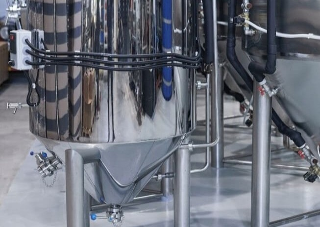
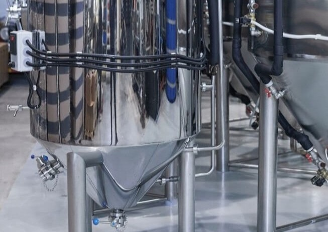

FOOD INDUSTRY
BTINOX, as a reliable partner of the food industry, provides technological solutions for safer products, more efficient processes, and higher productivity.
At BTINOX, we provide our clients with comprehensive design and implementation of production lines, the manufacture of advanced stainless-steel structures, and the integration of modern technologies that improve product quality, reduce costs, and increase operational efficiency.
PASTEURIZATION
Infections and microbial contamination that occur during the production process are often detected only with a delay. This risk can be avoided by using the pasteurization process.
The recuperative design of the continuous flow pasteurization system enables the recovery of up to 96% of the supplied heat, making this process one of the most cost-effective heat treatment methods in use today.
▼
Microbiologically unstable products that are packaged and delivered to the customer can represent a serious challenge for the manufacturer. Infections and microbial contamination that occur during the production process are often detected only after a certain time delay. This risk can be effectively avoided with the pasteurization process.
The most reliable way to maintain stable quality and full product flavor is pasteurization or continuous flow pasteurization. Through thermal inactivation of microorganisms, the manufacturer defines the microbiological properties of the product. As with all methods of reducing the presence of microorganisms, effectiveness depends on the initial number of organisms in the untreated beverage. The effectiveness of the heat treatment is measured by the number of achieved pasteurization units (PU).
In a flow pasteurizer, the product is continuously subjected to gentle treatment just before packaging. Microorganisms that could spoil the beverage are quickly destroyed without affecting its quality. This process allows manufacturers to ensure consistent quality of their products.
Flow pasteurization is a reliable and economical method that ensures top-quality results. We place special emphasis on process safety, enabling the production of the highest-quality products. Our design considers all key parameters to prevent any change in taste or color of the product.
Our pasteurization unit demonstrates high efficiency. Thanks to the recuperative design of the flow pasteurization system, up to 96 percent of the supplied heat can sometimes be recovered. This is why flow pasteurization is currently the most cost-effective of all thermal processing methods in use today.
The design and operation of the system must be specifically adapted to the type of product being processed. Through long-term planning, we focus on hygienically flawless, high-quality process modules and components that ensure maximum long-term reliability.
CIP CLEANING UNIT
The design and functionality of the CIP unit have a significant impact on operating costs and hygiene standards. Proper layout ensures cleaning efficiency, thereby guaranteeing production safety and the quality of the final product.
The appropriate system configuration is determined by the cost of detergents, water consumption, media availability, and the production processes themselves. Installing systems tailored to specific operational areas provides additional safety.
▼
Automatic CIP systems often receive less attention than main processes, yet proper design and functionality significantly impact operating costs and hygiene standards. Correct layout ensures cleaning efficiency, safe production, and product quality. The appropriate system configuration is determined by detergent costs, water consumption, media availability, and the production processes themselves.
The most important factors in plant decision-making are high plant yields, optimal vessel occupancy times, and minimal primary energy consumption. Our CIP cleaning concept uses special mixing safety valves for the safe separation of vessel and pipe groups. This allows independent cleaning of vessels and pipes, even if production in other departments or systems in the plant continues uninterrupted.
We ensure product safety at every stage of the process. We consider all local conditions, specific customer requirements, and pathways to significant savings.
Our Advantages:
- Implementing a CIP system provides a time advantage and reduces labor costs.
- The production process and CIP process can run simultaneously.
- Reduced consumption of cleaning agents
- Reduced energy consumption during cleaning
- With product safety ensured throughout the piping system, production can start earlier – resulting in additional capacity.
- A practical tool for increasing production
- Maximum equipment utilization, especially during production peaks.


PIPING LAYOUT AND INSTALLATION
High-quality piping installation requires top standards, especially in the food industry. In all our activities, the client is always at the center of attention. Our services include the design, coordination, assembly, and documentation of process systems, as well as inspections to ensure quality and smooth commissioning.
DESIGN AND ENGINEERING
From isometric drawings to pipe class specifications, from detailed engineering to project management, Btinox takes on project oversight directly on-site, at the client’s location, or in its technological center. For precise engineering, we regularly use modern CAE tools (computer-aided engineering).
Whether it involves establishing a completely new plant, expansion, reconfiguration, or modernization of an existing process facility, our engineers are here to provide support with top-level knowledge and experience, ensuring excellent services.
▼
Using various technologies, we can provide solutions for individual pieces of equipment as well as entire production lines for beer, dairy products, food, and juices. Our design and process engineering philosophy is based on the highest European standards regarding energy efficiency, product safety, and maximum plant capacity, while ensuring strict hygiene and safety criteria. Our expertise and many years of experience ensure that clients receive equipment that is thoroughly tested and fully suitable for the intended process.
In addition to supplying high-quality process equipment, we also offer various innovative solutions for process and service automation – from electronic process control to integrated network systems across the entire company.
An additional advantage is our extensive knowledge of processes and industry, which is reflected both in the selection of hardware and the functionality of software. Our solutions provide clear visibility of the production process, optimal resource utilization, and product quality assurance. Furthermore, our business encompasses professional project management, on-site assembly, commissioning and training, as well as after-sales services and spare parts supply.

 

AUTOMATION
Various processes in the food industry, such as dairy production, are adapted for the manufacture of different dairy products.
Consequently, the automation of these processes is equally diverse and branched. For the purpose of automating production facilities, Btinox has developed its own operational and control concept.
▼
Btinox acts as a system integrator with extensive expertise in process technology. In addition to custom solutions, we can also offer fully automated solutions for a wide range of automation and information technology applications.
We provide proven, field-tested solutions that are individually tailored to your processes. Our process control specialists select the appropriate software tools available on the market and adapt them to your needs. The combination of our process engineering and in-depth industry knowledge and specific requirements is key to making the right decisions.
Diversity – a natural advantage also in process control engineering. With an emphasis on system integration, we combine our knowledge of process and industrial engineering with the software available on the market.
When necessary, we are flexible enough with the appropriate adjustments to implement solutions fully adapted to local conditions.
Process control technology under the guidance of process engineering experts. Our network of specialists ensures that we provide the market with verified and flawlessly automated solutions.
The most advanced control tools we use demonstrate our in-depth understanding of processes and enable us to provide stable process conditions with maximum efficiency and minimal energy consumption.
HONEY
Using our many years of experience in the beverage and food industry and in gentle product processing, we manufacture low-temperature units for honey processing, suitable for small, medium, and large volumes. Like all our equipment, these units enable clients to handle the product smoothly and efficiently, while preserving the full quality of the honey in accordance with strict industry rules and standards.